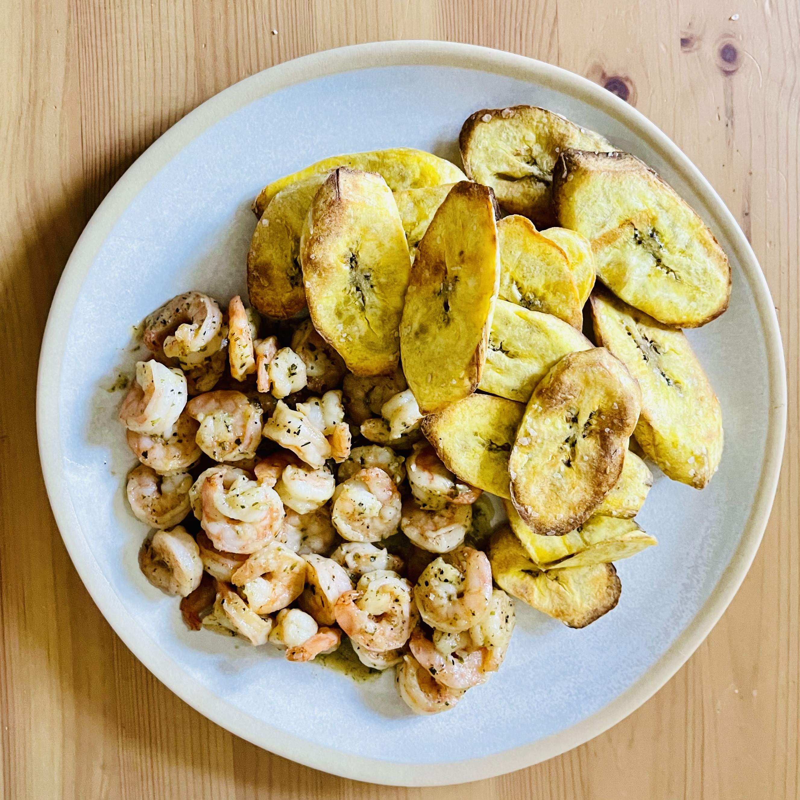

Dinner Recipes

Beef Stew with Airfried Plantains and Pico de Gallo
End your day with this hearty and flavorful Latin-inspired dinner! Tender, slow-cooked beef stew served over crispy airfried plantains with fresh, vibrant pico de gallo. This protein-rich dinner is both comforting and satisfying, offering bold flavors that the whole family will love. The combination of savory beef, sweet plantains, and zesty pico creates an unforgettable meal.
Featured Recipe Details
Ingredients:
- 1.5 lbs beef stew meat, cut into bite-sized pieces
- 3 medium ripe plantains, sliced diagonally
- 3 medium tomatoes, diced (for pico de gallo)
- 1/2 cup red onion, finely chopped
- 1/4 cup fresh cilantro, chopped
- 4 cloves garlic, minced
- 2 tbsp Latin seasoning (cumin, paprika, oregano)
- 1 tbsp soy sauce
- 1 tbsp Worcestershire sauce
- 2 limes (1 juiced, 1 for garnish)
- Vegetable oil for frying
- Salt and pepper to taste
Instructions:
- Season beef with Latin spices, garlic, soy sauce, Worcestershire sauce, salt, and pepper. Let marinate for 30 minutes.
- cut the plantains marinate with oil and salt airfried until golden-brown.
- In a skillet, cook the seasoned beef over high heat for 30-40 minutes until browned and tender. Add a splash of water if needed.
- Make pico de gallo: Mix diced tomatoes, red onion, cilantro, lime juice, and a pinch of salt in a bowl.
- Arrange fried plantains on a plate. Top with the savory beef.
- Add a generous scoop of fresh pico de gallo on the side.
- Serve with ketchup or your favorite hot sauce. Garnish with lime wedges.

Garlic Shrimp with Airfried Plantains
A lighter dinner option! Perfectly seasoned garlic shrimp paired with crispy airfried plantains. Quick to prepare and packed with flavor—perfect for busy weeknights.
View Recipe DetailsGarlic Shrimp with Airfried Plantains
Ingredients:
- 1 lb large shrimp, peeled and deveined
- 3 ripe plantains, sliced diagonally
- 6 cloves garlic, minced
- 3 tbsp butter
- 2 tbsp olive oil
- 1 tsp red pepper flakes (optional)
- 2 tbsp fresh parsley, chopped
- 2 limes (1 juiced, 1 for garnish)
- 1 tsp paprika
- Salt and black pepper to taste
- Cooking spray for air fryer
Instructions:
- Preheat air fryer to 400°F (200°C).
- Spray plantain slices lightly with cooking spray and season with salt. Place in air fryer basket in a single layer.
- Air fry plantains for 12-15 minutes, flipping halfway through, until golden and crispy.
- While plantains cook, season shrimp with paprika, salt, and pepper.
- Heat butter and olive oil in a large skillet over medium-high heat.
- Add minced garlic and red pepper flakes, sauté for 30 seconds until fragrant.
- Add shrimp to the skillet and cook for 2-3 minutes per side until pink and cooked through.
- Squeeze lime juice over the shrimp and toss with fresh parsley.
- Serve garlic shrimp alongside crispy airfried plantains. Garnish with lime wedges.